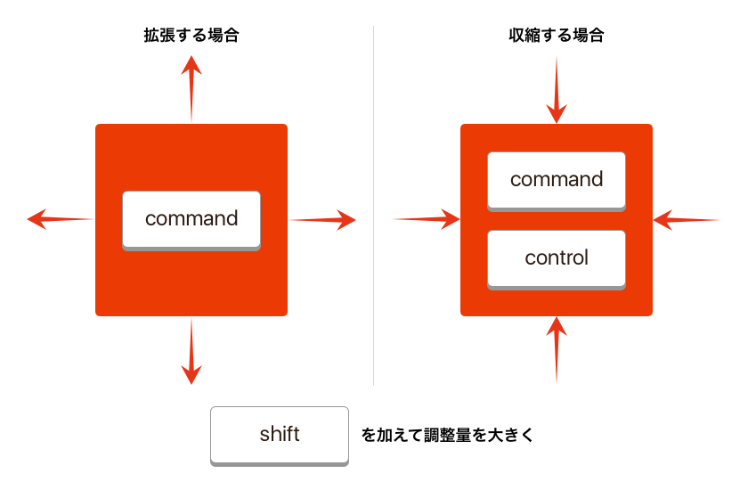

Sketchプラグインを適当に選んで紹介していく、Sketch Plugin Advent Calendar 2016 7日目は、キーボードですべての辺をリサイズできる「Keyboard Resize」です。
Command ＋ 矢印でレイヤーのサイズを調整できますが、基本的には左上が起点になるため、幅を調整すると位置も調整する場合がほとんどではないでしょうか？
このプラグインではすべての辺をキーボードで調整できるよう、ショートカットを提供します。
ショートカットは次の通りです。
- 上辺を10px拡張: Command ＋ Shift ＋ ↑
- 右辺を10px拡張: Command ＋ Shift ＋ →
- 下辺を10px拡張: Command ＋ Shift ＋ ↓
- 左辺を10px拡張: Command ＋ Shift ＋ ←
- 上辺を1px拡張: Command ＋ ↑
- 右辺を1px拡張: Command ＋ →
- 下辺を1px拡張: Command ＋ ↓
- 左辺を1px拡張: Command ＋ ←
- 下辺を1px収縮: Command ＋ Control ＋ ↑
- 左辺を1px収縮: Command ＋ Control ＋ →
- 上辺を1px収縮: Command ＋ Control ＋ ↓
- 右辺を1px収縮: Command ＋ Control ＋ ←
- 下辺を10px収縮: Command ＋ Control ＋ Shift ＋ ↑
- 左辺を10px収縮: Command ＋ Control ＋ Shift ＋ →
- 上辺を10px収縮: Command ＋ Control ＋ Shift ＋ ↓
- 右辺を10px収縮: Command ＋ Control ＋ Shift ＋ ←
ややこしいですが、Command ＋ 伸ばす方向のキーを基本に、縮める時はControlを押して縮める方向のキー、さらに大きく調整する時はShiftを押す、と覚えましょう。

ちなみに、大きさの比率にロックがかかっている場合は、比率を保って調整されます。
またキーを押したときの調整量も設定でき、Shiftなしが「Set Small Resize Distance」、Shiftありが「Set Big Resize Distance」です。移動量を頻繁に調整する場合は、ショートカットキーを割り当てると良い感じになります。
ちょっと慣れるまで違和感がありますが、キーボードで微調整をする方にはうってつけのプラグインじゃないでしょうか。
欠点があるとすれば、テキストを編集しているときにもショートカットが効いてしまうため、行頭・行末へキャレットを移動できなくなることです。キーボードを多用する方は要注意ですね。
それでは、楽しいSketchライフを。